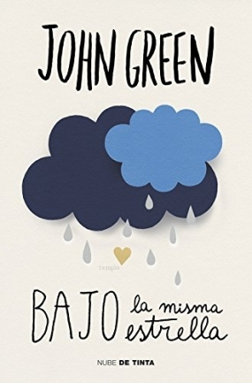

-

-

Bajo la misma estrella
La daptación de la novela de John Green, 'The Fault In our stars' es una mezcla de humor y tragedia en la que se entrelazan el amor y los sueños de la adolescencia. Hazel y Gus son dos adolescentes cuyas vidas distan mucho de ser normales. Ambos enfermos de cáncer, la vida les ha dado un duro camino por recorrer pero que ellos intentar tomarse de la mejor forma que conocen: con ingenio y energía positiva. Tras conocerse en un grupo de apoyo, y bajo circunstancias que hubieran asustado a cualquiera, ellos deciden echarle valor y no lamentarse por el destino que les ha tocado vivir. Con la intención de no dejarse ninguna experiencia por vivir, deciden cumplir entre los dos el mayor deseo de Hazel, conocer a su escritor favorito. En un tierno y cómico viaje, cruzarán medio mundo en la que será la aventura de su vida para llegar hasta Amsterdam antes de que se les acabe el tiempo.